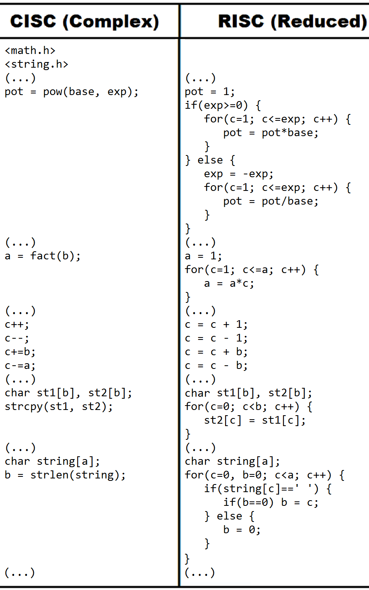

CONJUNTO DE INSTRUÇÕES:
ou Jogo de Instruções (ISA, "Instruction Set Architeture"), é a lista e definição de todas as operações que o processador de determinada máquina suporta, que é capaz de executar. Nele, há os códigos das operações todas que ele "conhece", e os programas e suas instruções organizam essas "habilidades".
HISTÓRIA:
Até por volta dos anos 70, os programas e sistemas computacionais estavam sendo desenvolvidos para a nova tendência de projeto de Conjunto de Instruções: instruções cada vez mais numerosas, complexas e especializadas, que aceleravam a realização de tarefas muito específicas, porém, muito pouco usadas.
Denomina-se CISC (Complex Instruction Set Computer) essa arquitetura.
Contudo, devido à alta quantidade de instruções gravadas, havia dificuldades na execução do sistema como um todo, então, foi pensado o projeto de conjunto de instruções com menos instruções, mais genéricas, simples de serem executadas, para se reduzir a quantidade de instruções do Conjunto de Instruções.
Dessa forma, a execução de tarefas complexas e específicas se tornava um pouco mais lenta (por ser contemplada por mais de uma instrução, diferente dos projetos CISC), contudo, era observado que essas tarefas complexas eram raras, por isso sua execução mais lenta é compensa na memória do computador.
Denomina-se RISC (Reduced Instruction Set Computer).
Comparação da Lógica do Conjunto CISC e do RISC em programação de alto nível (Linguagem C):
